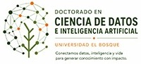
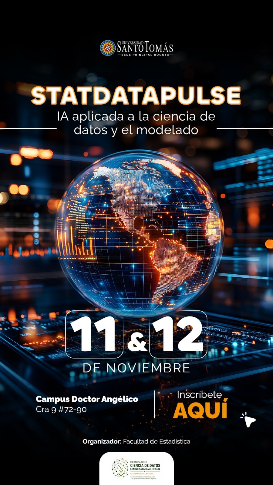

FACULTAD DE ESTADÍSTICA · UNIVERSIDAD SANTO TOMÁS
IA aplicada a la ciencia de datos y el modelado
DE NOVIEMBREDE 2026
Campus Doctor Angélico · Cra 9 #72-90, Bogotá
Las inscripciones aún no están abiertas. Anunciaremos aquí la fecha de apertura.

Cuando el modelo aprende, la estadística decide

La edición 2026 del simposio se concentra en un punto concreto: qué cambia en el trabajo estadístico cuando la inteligencia artificial entra al proceso de modelado. Dos días de charlas y cursillos prácticos sobre agentes de IA, modelos estocásticos y riesgo, con código en la mano.
Organiza la Facultad de Estadística de la Universidad Santo Tomás, con el acompañamiento del Doctorado en Ciencia de Datos e Inteligencia Artificial de la Universidad El Bosque. Está dirigido a estudiantes, docentes, investigadores y profesionales que trabajen con datos.
Dos días, dos rutas paralelas
Publicaremos aquí las conferencias, cursillos y el cierre del evento en cuanto el comité los apruebe.
Ponentes y talleristas
Faltan por anunciar los ponentes del 12 de noviembre y el cursillo de la ruta B. Las fotografías reemplazarán las iniciales cuando el comité las envíe.
Comité organizador
Convocatoria y recursos
Convocatoria de trabajos
Pósters y comunicaciones cortas de 15 minutos. Fechas de llamado [POR CONFIRMAR].
Ver convocatoriaRepositorios de cursillos
Código, datos y cuadernos de cada cursillo, publicados durante el evento.
AccederPresentaciones y resúmenes
Material de las conferencias y los pósters, disponible tras cada sesión.
Ver materialesLas inscripciones abren pronto
El registro se hará por la plataforma de eventos de la Universidad Santo Tomás. Publicaremos el enlace en esta página apenas se habilite. Los cursillos tendrán cupo limitado y se asignan en orden de inscripción.
Apertura y cierre: [FECHAS POR CONFIRMAR]
Publicaremos aquí el enlace y las fechas en cuanto la Universidad habilite el registro.